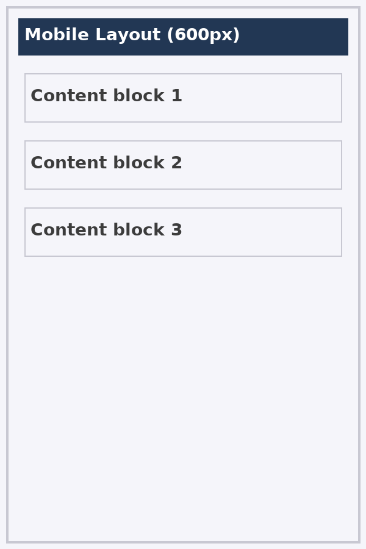
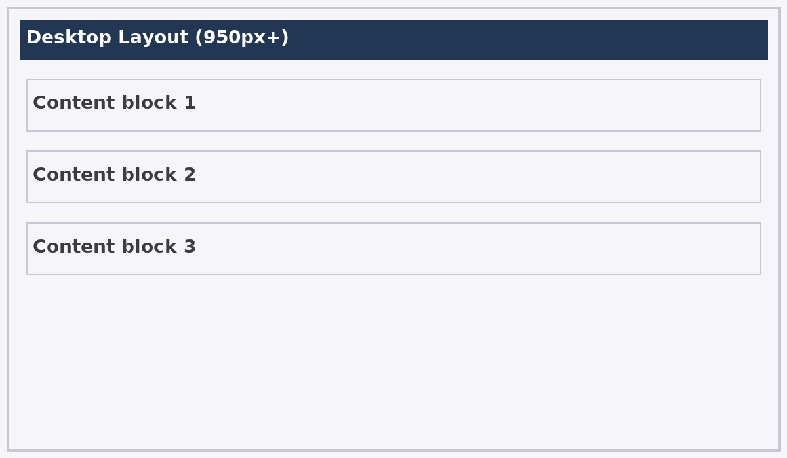

Storyboard & Design Details
Below are two layout mockups: one for mobile (min 600px) and one for desktop (min 950px). These show the intended <div> groups and layout regions used in the final pages.
Mobile mockup (600px)
Desktop mockup (950px+)
Color palette & font
RGB values: #1e3a8a (30,58,138), #f5f7fb (245,247,251), #ffffff (255,255,255).
Font-family used: "Segoe UI", Roboto, "Helvetica Neue", Arial. Root font-weight: 400 (regular), headings use 700 (bold).